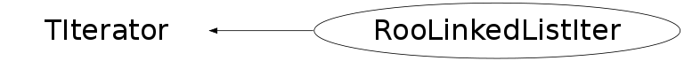

class RooLinkedListIter: public TIterator
RooLinkedListIter is the TIterator implementation for RooLinkedList
Function Members (Methods)
public:
| RooLinkedListIter() | |
| RooLinkedListIter(const RooLinkedListIter& other) | |
| RooLinkedListIter(const RooLinkedList* list, Bool_t forward) | |
| virtual | ~RooLinkedListIter() |
| static TClass* | Class() |
| virtual const TCollection* | GetCollection() const |
| virtual Option_t* | TIterator::GetOption() const |
| virtual TClass* | IsA() const |
| virtual TObject* | Next() |
| TObject* | NextNV() |
| virtual bool | operator!=(const TIterator& aIter) const |
| bool | operator!=(const RooLinkedListIter& aIter) const |
| TObject* | TIterator::operator()() |
| virtual TObject* | operator*() const |
| virtual TIterator& | operator=(const TIterator& other) |
| virtual void | Reset() |
| virtual void | ShowMembers(TMemberInspector& insp) |
| virtual void | Streamer(TBuffer& b) |
| void | StreamerNVirtual(TBuffer& b) |
Data Members
protected:
| const RooLinkedListElem* | _cptr | ! Current link element |
| Bool_t | _forward | Iterator direction |
| const RooLinkedList* | _list | ! Collection iterated over |
| const RooLinkedListElem* | _ptr | ! Next link element |
Class Charts
{kind=link}
{kind=link}
{kind=link}
{kind=link}

Function documentation
bool operator!=(const TIterator& aIter) const
bool operator!=(const RooLinkedListIter& aIter) const